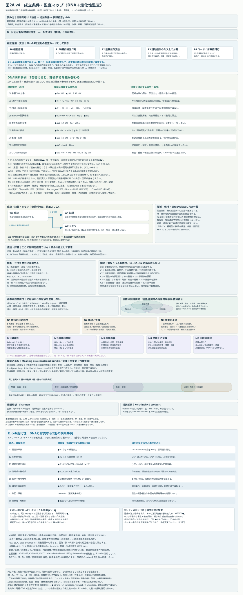

FIGURE 2A · V4 · 2D CANONICAL AUDIT MAP
図2A｜情報関係の成立条件を監査する
同じ対象に何を帰属できるかを、Σ・機構・時間・介入から読む
R/W/K/F/C/N/Mなどの成立条件と禁止飛躍を、DNA・細菌走化性を含む横断監査から検討します。
これは「概念の発達階段」でも「情報の種類一覧」でもありません。矢印は成立条件・追加条件・監査関係を表します。図2Bの具体的な因果矢印とは区別してください。 R/W/K/F/C/N/Mを単一の梯子や総合スコアにしません。
Shannon解析・K&Wは横断解析です。M3・N3・Fo・Fsは独立監査とし、個体UIを中央司令塔や内部画面とは読みません。
拡大後は図の枠内を縦横にスクロールできます。キーボードでは枠にフォーカスして矢印キーを使用します。ブラウザ自体のズームも利用できます。

図を読み込めませんでした。以下のSVG直接リンク、または文章の監査資料をご利用ください。

図が読めない環境・文章で確認したい場合
同じ対象でも、相互作用、変換、履歴、機能、制御、正誤、表象を一括して帰属しません。Σと比較対象、機構、時間幅、介入による根拠を指定し、追加の帰属に必要な条件を別々に点検します。以下のHTML資料には説明・監査表があります。